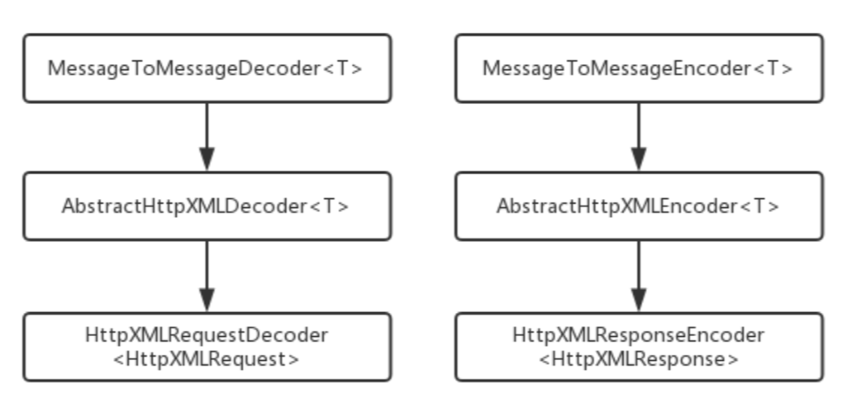

Netty权威指南，是一本广受欢迎的Netty书籍。博主研读的是2014年6月第一版，第二次印刷的书本。
基础篇 走进Java NIO
Java的I/O演进之路
I/O入门
Java1.4之前，Java的I/O还不完善，开发人员在开发该性能I/O时，会遇到困难：
- 没有缓冲区，I/O性能存在问题
- 没有Channe概念，只有输入/输出流
- 同步阻塞I/O(BIO)通讯，导致通讯线程长时间阻塞
- 支持字符集有限，硬件可移植性不好
高性能开发领域，很长一段时间里一直被C++/C长期占据，Java的BIO被大家所诟病。
Linux网络I/O模型
- 阻塞I/O模型
- 费阻塞I/O模型
- I/O复用模型
- 信号驱动I/O模型
- 异步I/O模型
I/O多路复用技术
I/O多路复用的应用场景
- 服务器需要同时处理多个监听状态或连接状态的套接字
- 服务器需要同时处理多种网络协议的套接字
Linux网络I/O模型总结：select—>epoll
- 支持一个进程打开的socket描述符不受限制(仅受限于系统的最大文件句柄数)
- I/O效率不会随着FD数目的增加而线性下降
- 使用mmap加速内核与用户空间的消息传递
- epoll的API更加简单
Java的I/O演进
总结
NIO入门
主要讲解BIO、NIO、NIO2.0的使用。主要包括
- 传统的BIO模型
- 基于NIO的费阻塞编程
- 基于NIO2.0的异步费阻塞(AIO)编程
- 为什么需要使用NIO
- 为什么选择Netty
传统BIO编程
使用传统的BIO模型，最大的问题是缺乏伸缩能力，当客户端并发数增加后，服务端的线程个数和客户端的并发访问数呈1：1的正比关系。有线程是JVM非常宝贵的资源，当线程数膨胀之后，系统的性能将急剧下降。
伪异步IO编程
针对BIO模型的一个优化方案是做线程池。通过线程池控制线程数量，并能够灵活的调整并发线程的数量，防止海量并发接入导致线程耗尽。
伪异步IO编程实际上是对BIO的一个简单优化，但它并没有从本质上回避BIO的缺点，可能会造成如下后果
- 相应缓慢
- 线程池技术，前面进入线程池的任务可能会影响后面任务的运行
- 线程池满了之后，后续加入任务会被阻塞
NIO编程
NIO概念的理解。一种是New IO，这也是官方的叫法。另外一种是Non-Block IO，即非阻塞IO。
NIO类库
- 缓冲区Buffer
- ByteBuffer
- CharBuffer
- IntBuffer
- LongBuffer
- FloatBuffer
- DoubleBuffer
- 通道Channel
- 网络读写SelectableChannel
- 文件操作的FileChannel
- 多路复用器Selector
AIO编程
NIO2.0引入了新的异步通道的概念，并提供了异步文件通道和异步套接字通道的实现。异步通道通过两种方式获取操作结果
- java.util.concurrent.Future
- 在执行异步操作的时候，传入一个java.nio.channel
不同模型的比较
||异步阻塞IO(BIO)|伪异步IO|非阻塞IO(NIO)|异步IO(AIO)|
|:-:|:-:|:-:|:-:|:-:|
客户端个数：IO线程数|1:1|M:N(M>N)|M:1(1个IO线程处理多个客户端进程)|M:0(不需要启动额外的线程，被动回调)|
IO类型(阻塞)|阻塞IO|阻塞IO|阻塞IO|非阻塞IO|非阻塞IO|
IO类型(同步)|同步IO|同步IO|同步IO(多路复用)|异步IO|
API使用难度|简单|简单|非常复杂|复杂|
调试难度|简单|简答|复杂|复杂|
可靠性|非常差|差|高|高|
吞吐量|低|中|高|高|
选择Netty的理由
- 为什么不选择原生Java NIO
- NIO的类库和API使用复杂
- 具备额外技能作铺垫
- 可靠性能差，工作难度较大
- JDK NIO存在BUG
- 为什么选择Netty
- API使用简单，开发门槛较低
- 功能强大，预支了多种解码器，支持多种主流协议
- 定制能力强
- 性能高
- 成熟、稳定
- 社区活跃，班底迭代周期短，发现的BUG被及时修复
入门篇 Netty NIO开发指南
Netty入门应用
使用Netty实现TimeServer服务器端与客户端通讯服务
## 服务器端代码
public class TimerServer{
public void bind(int port) throws Exception{
// 配置服务端的NIO线程组
EventLoopGroup bossGroup = new NioEventLoopGroup();
EventLoopGroup workGroup = new NioEventLoopGroup();
try{
ServerBootstrap b = new ServerBootstrap();
b.group(bossGroup,workGroup)
.channel(NioServerSocketChannel.class)
.option(ChannelOption.SO_BACKLOG,1024)
.childHandler(new ChildChannelHandler());
// 绑定端口，同步等待成功
ChannelFuture f = b.bind(port).sync();
// 等待服务端口监听端口关闭
f.channel().closeFuture().sync();
}finally{
// 优雅退出，释放线层组资源
bossGroup.shutdownGracefully();
workGroup.shutdownGracefully();
}
}
private class ChildChannelHandler extends ChannelInitializer<SocketChannel>{
@override
protected void iniitChannel(SocketChannel args0) throws Exception {
args0.pipeline()/addLast(new TimeServerHandler());
}
}
/**
* @desc 测试时间服务器
*/
public static void main(String[] args) throws Exception {
int port = 8080;
if(args!=null && args.length>0){
try{
port = Integer.valueOf(args[0]);
}catch(NumberFormatException e){
// 采用默认值
}
}
new TimeServer().bind(port);
}
}
/** Netty时间服务器服务端TimeServerHandler */
public class TimerServerHandler extends ChannelHandlerAdapter{
@override
public void channelRead(ChannelHandlerContext ctx,Object msg) throws Exception{
Bytebuf buf = (ByteBuf)msg;
byte[] req = new byte[buf.readableBytes()];
buf.readBytes(req);
String body = new String(req,"UTF-8");
System.out.println("The time server receive order : "+body);
String currentTime = "QUERY TIME ORDER".equalsIngnoreCase(body)?new java.util.Date(System.currentTimeMilles()).toString():"BAD ORDER";
Bytebuf resp = Unpooled.copiedBuffer(currentTime.getBytes());
ctx.write(resp);
}
@override
public void channelReadComplete(ChannelHandlerContext ctx) throws Exception{
ctx.flush();
}
@override
public void exceptionCaught(ChannelHandlerContext ctx,Throwable cause){
ctx.close();
}
}
## 客户端代码
public class TimeClient{
public void connect(int port,String host) throws Exception{
// 配置客户端NIO线程组
EventLoopGroup group = new NioEventLoopGroup();
try{
Bootstrap b = new Bootstrap();
g.group(group)
.channel(NioSocketChannel.class)
.option(ChannelOption.TCP_NODELAY,trye)
.handler(new ChannelInitializer<SocketHandler>(){
@override
public void initChannel(SocketChannel ch) throws Exception{
ch.pipeline().addLast(new TimeClientChannel());
}
});
// 发起异步连接操作
ChannelFuture f = b.connect(host,port).sync();
// 等待客户端链路关闭
f.channel().closeFuture().sync();
}finally{
group.shutdownGracefully();
}
}
/** 主要测试方法 */
public static void main(Stirng[] args){
int port = 8080;
// read port from input parameters if possible
new TimeClient().bind(port,hostname[ or "localhost"]);
}
}
public class TimeClientHandler extends ChannelHandlerAdapter{
private final ByteBuf firstMessage;
public TimeClientHandler(){
byte[] req = "QUERY TIME ORDER".getBytes();
firstMessage =Unpooled.buffer(req.length);
firstMessage.writeBytes(req);
}
@override
public void channelActive(ChannleHandlerContext ctx) {
ctx.writeAndFlush(firstMessage);
}
@override
public void channelRead(ChannelHandlerContext ctx,Object msg) throws Exception {
ByteBuf buf = (ByteBuf)msg;
byte[] req = new String(buf.readableBytes());
buf.readBytes(req);
String body = new String(req,"UTF-8");
System.out.println("Now is : "+body);
}
@override
public void exceptionCaught(ChannelHandlerContext ctx,Throwable cause){
// 释放资源
ctx.close();
}
}TCP黏包/拆包的解决之道
使用TCP协议，在发送或传输过程中都需要考虑黏包、拆包问题。
TCP黏包/拆包
TCP是一个流协议，是一串没有边界的字符流。TCP底层并不了解上层数据业务数据的含义，他会根据TCP缓冲区的实践情况进行划分，所以在业务上完整的一个包可能会被拆分成多个包进行发送，也有可能多个小包封装成一个大包进行发送，这就是所谓的黏包、拆包问题。
问题产生的原因：
- 应用程序write的字节大小大于套接字缓冲区大小
- 进行MSS大小的TCP分段
- 以太网帧的payload大于MTU进行IP分片
解决策略
- 消息定长，如果不够空位补齐
- 在包尾部增加会回车换行符，例如FTP协议
- 将消息分为消息头和消息体，消息头中包含消息的总长度
- 更复杂的应用层协议
Netty解决读半包问题
为了解决TCP黏包、拆包问题，Netty引入了多种编码解码器用于处理半包问题，只要能够熟悉掌握这些类库，解决黏包问题非常容易。
LineBasedFrameDecoder的原理是依次遍历ByteBuf中的可读字节，判断是否存在换行符”\n”、”\r\n”。如果有，就以此为结束位置，从可读索引到结束位置的字节就组成了一行。
StringDecorder的功能非常简单，就是将发送的对象转换成字符串，然后继续条用Handler。LineBasedFrameDecoder+StringDecoder组合就是按照行切分的文本解码器，它用来支持解决TCP的黏包和拆包。
分隔符和定长符解码器的应用
TCP以流的方式进程数据传输，上层的应用协议对消息进行了区分，往往采用如下方式
- 消息长度固定
- 将回车作为换行符
- 将特殊的分隔符作为消息的结束位置
- 通过在消息头中定义长度字段来标识消息的长度
DelimiterBasedFrameDecoder应用开发
DelimiterBasedFrameDecoder可以根据自定义分隔符作为结束位置，在使用的时候传入两个参数
new DelimiterBasedFrameDecoder(1024,Bytebuf:: new DelimiterBasedFrameDecoder(1024,Bytebuf:: delimiter)其中第一个参数表示消息的最大长度，第二参数表示分隔符。
FixedLengthFrameDecoder应用开发
FixedLengthFrameDecoder是固定长度解码器，它能够按照固定的长度对消息进行自动解码，开发者不需要考虑TCP的黏包和拆包问题。
new FixedLengthFrameDecoder(new FixedLengthFrameDecoder(10)其中10表示固定长度。
中级篇 Netty编解码开发指南
了解Netty内置的编码器之后，继续学习Netty的编码解码款框架的应用，例如java序列化、二进制编码、Google Protobuf和JBoss的Marshallling序列化框架。
编解码技术
基于Java提供的对象输入/输出流ObjectInputStreaming和ObjectOutputStreaming，可以直接把Java对象作为可存储的字节流写入文件，也可以传输到网上。对程序员而言，序列化可提高开发效率。
Java序列化的目的
- 网络传输
- 对象持久化
Java序列化缺点
- 无法跨语言
- 序列化后的码流太大
- 序列化性能太低
业界主流的编解码框架
- Google Protobuf
主要特点- 结构化存储
- 搞笑的编解码性能
- 语言无关、平台无关、扩展性好
- 官方支持Java、C++和Python三种语言
为什么不适用XML走位通讯协议？一方面，解析的时间开销；另一方便，XML为了可读性牺牲的空间开销都非常大。
protobuf引入了数据描述文件和代码生成机制，主要优点 - 文件化的数据结构描述语言，可以实现语言和平台无关，特别适合系统间集成
- 通过标识字段的顺序，实现协议的兼容
- 代码生成机制，不需要手动编写同样数据结构的C++和Java版本
- 方便后续的管理和维护
Facebook Thrift
thrift主要有一下部分组成- 语言系统以及IDL编译器：负责由用户给定的IDL文件生成相应语言的接口代码
- TProtocal: RPC的协议层，可以选择多个不同的对象序列化方式，如JSON何Binary
- TTransport: RPC的传输层，同样可以选择不同的传输层实现，如socket、NIO、MemeroyBuffer等
- TProcessor:作为协议层和用户提供的服务实现之间的纽带，负责调用服务实现的接口
- TServer: 聚合TProtocal、TTransport和TProcessor等对象
Thrift支持三种不同的编解码 - 通用的二进制编码
- 压缩二进制编解码
- 优化的可选字段压缩编解码
JBoss Marshalling
JBoss Marshalling是一个序列化的API，修正了JDK自带的序列化包的很多问题。相比于前面两种编解码协议，JBoss Marshalling更多是应用于JBoss内部，应用范围有限。Java序列化
Java序列化在Netty NIO框架中的使用方式
## 服务器端：ChannleInitializer
public void initChannel(SocketChannel ch){
ch.pipeline()
.addLast(new ObjectDecoder(1024*1024,Classresolvers.weakCachingConcurrentResolver(this.getClass().getClassLoader())));
ch.pipeline().addLast(new OjectEncoder());
// add other handler
} Google Protobuf编解码
Profotbuf是一个灵活的、小巧的、高效的、结构化的数据序列化框架，相比于XML等传统的序列化工具，它更小、更快、更简单。Profobuf支持一次可以到处使用，甚至跨语言使用，通过代码生成工具可以自动生成不同语言版本的源代码，甚至可以在不同版本的数据结构进程间进行数据传递实现数据结构的前后兼容。
Protobuf开发环境搭建
Netty的Protobuf服务端开发
各种不同版本的示例程序代码，不同点在于ChannelHandlerAdapter的实现方式。其中本部分基于Protobuf的Netty实现方式如下所示
## 服务器端
public class ServerHandler extends ChannelHandlerAdapter{
@override
public void channelRead(ChannelHandlerContext ctx,Object msg) throws Exception {
// protobuf object
Test.TestReq req = (Test.TestReq )msg;// 直接强制转化为目标类
// 其他处理
ctx.writeAndFlush([Target Content]);
}
}
## 客户端代码类似这里使用到的ProtofReq对象，是通过Protobuf自动化生成的类。
JBoss Marshelling编解码
JBose Marshalling的序列化编解码框架，应用领域有限不做赘述。
高级篇 Netty多协议开发和应用
Http协议开发应用
Http协议是建立在TCP传输层协议之上的应用层协议，是一个属于应用层的面向对象的协议。与1990年提出，经过多年的发展逐渐完善。Netty的Http协议栈是基于Netty的NIO通讯框架，因此Netty的Http协议也是异步非阻塞的。
Http协议介绍
Http协议主要有一下特点
- 支持Client/Server模式
- 简单：客户端发送请求时，只需要制定服务URL，携带必要的请求参数或消息体即可
- 灵活-Http允许传输任意类型的数据，传输类型在Http消息头中的Content-Type加以标记
- 无状态-Http协议是无状态协议，既对于事物处理没有记忆能力。
Http请求消息
- 消息组成
- Http请求行
- Http消息头
- Http请求正文
- 请求方法
- GET：请求资源
- POST: 请求资源并附加提交数据
- HEAD: 请求消息报头
- PUT: 请求存储一个资源
- DELETE: 请求服务器删除一个资源
- TRACE: 请求服务器会送收到的请求消息，主要用于测试或诊断
- Connect: 保留将来使用
- Options: 请求查询服务器的性能
Http相应消息
- 效应状态
- 1XX: 指示消息。请求已接收，继续处理
- 2XX: 成功。请求已被成功接收、理解、接收
- 3XX：重定向。要完成请求必须进行更进一步的操作
- 4XX: 客户端错误。请求有语法错误或请无法实现
- 5XX: 服务端错误。服务器未能处理请求
- 常见相应代码与描述
|状态码|状态描述 |
|:-:|:-|
|200|OK:客户端请求成功|
|400|Bad Request: 客户端请求存在语法错误，不能被服务器所理解|
|401|Unauthorized: 请未经授，这个状态代码必须和WWW-Authenticate报头域一起使用|
|403|Forbidden:服务器收到请求，但拒绝提供服务|
|404|Not Found: 请求资源不存在|
|500|Internal Server Error: 服务器发生不可预期的错误|
|503|Server Unavailabkle: 服务器当前不能处理客户端的请求，一段时间之后可能恢复|
Http协议的Netty处理
服务器端重点代码
@override protected void initChannel(SocketChannel ch) @override protected void initChannel(SocketChannel ch) throws Exception{
ch.pipleline().addLast("http-decoder",new HttpRequestDecoder());
ch.pipleline().addLast("http-aggregator",new HttpObjectAgregator(65536));
ch.pipleline().addLast("http-encoder",new HttpResponseEncoder());
ch.pipleline().addLast("http-chunked",new ChunkedWriteHandler());
// 自定义: extends SimpleChannelInboundsHandler
Netty Http+XML协议栈开发
由于Http协议的通用性，异构系统间的通讯交互采用Http协议，通过Http协议承载业务数据进行消息交互。例如流行的Http+XML，或RestFUL+JSON。
在java领域，最常用的Http协议栈就是基于Serverlet规范的Tomcat等Web容器。由于Google等大佬的强力推荐，Jetty等轻量级Web容器也得到了广泛的应用。但许多场景下，基于Http的应用都是后台应用，Http仅仅是承载数据交换的一个通道，是一个载体而不是Web容器。这种场景下，一般不需要Tomcat这种重量型的Web容器。
另外网络安全日益严峻的今天，重量级的Web容器由于功能繁琐，会存在很多安全漏洞，典型的如Tomcat。这意味着需要为Wb容器做很多安全加固工作去修补这些漏洞，然而开发中并没有用到这些功能，这就带来了并发和维护成本。在这种场景下，选择一个更加轻量级的http协议栈是个更好的选择。

Netty Http+XML重点代码
@override
protected void initChannel(SocketChannel ch) throws Exception {
ch.pipleline().addLast("http-decoder",new HttpResponseDecoder());
ch.pipleline().addLast("http-aggregator",new HttpObjectAgregator(65536));
ch.pipleline().addLast("xml-decoder",new HttpXMLResponseDecoder(Order.class,true));
ch.pipleline().addLast("http-encoder",new HttpRequestEncoder());
ch.pipleline().addLast("xml-encoder",new HttpXMLRequestEncoder());
ch.pipleline().addLast("fileServerHandler",new HttpXMLHandler());
}小结
尽管本文中开发的Http+XML协议栈是一个高性能、通用的协议栈，但这里忽略了异常处理、可扩展性的API和配置能力。所以如果想要做产品化的协议栈，还需要一些额外的完善。
WebSocket协议开发
一直以来，网络在很多程度上都是围绕着Http的请求/相应模式而构建的。长期以来存在这个各种技术让服务器得知有数据可用时，立即将数据发送到客户端。最常用的一种技术手段是对服务器发起链接创建假象，被称为长轮循。利用长轮循，客户端可以打开指向服务器的Http连接，而服务器会一直保持链接打开，直到发送响应。服务器只要有数据，就会发送响应。这些问题都存在一个同样的问题，Http协议的开销，到时他们不适用于低延迟应用。
为了解决这些问题，WebSocket将网络套接字引入到了客户端和服务器端，浏览器和服务器之间可以通过套接字建立持久的连接，双方随时都可以互发数据给对方，而不是由客户端控制的一对一应答模式。
Http协议弊端
Http主要弊端总结
- 半双工模式。不能同时传送数据，意味着一个时刻，只有一个方向上的数据传送
- Http消息冗长复杂。Http消息包括消息头、消息体、换行符等，通常情况下采用文本传输，，相比于其他的二进制通讯，冗长而复杂
- 针对服务器推送的黑客攻击，例如长轮询
比较新的一种轮询技术是Comet，使用了Ajax。这种技术虽然可达到双工通信，但依然需要发送请求，而且在Comet中，普遍采用了长连接，这也会大量消耗服务器款到和资源。
为了解决Http协议效率底下的问题，HTML5定义了WebSocket协议，能更好的节省服务器资源和宽带并达到定时通信。
WebSocket入门
WebSocket主要特点
- 单一的TCP连接，采用了全双工模式通信
- 对代理、防火墙和路由器透明
- 无头部信息、Cookies和身份验证
- 无安全开销
- 通过Ping/Pong帧保持链路激活
- 服务器可以主动传递消息给客户端，不再需要客户端轮询
WebSocket的目的是为了取代轮询和Coment技术，使客户端浏览器具备像C/S架构下桌面系统一样的实时通信能力。
- 建立连接
客户端—>握手请求—>服务器—>握手相应 - 生命周期
握手成功之后，客户端和服务器端就可以通过”messages”的方式进行通信了，一个消息由一个或多个帧组成，WebSocket的消息并不一定对应某一个特定网络层的帧，它可以被分割成多个或被合并。 - 关闭连接
为关闭WebSocket连接，客户端和服务端需要通过一个安全的方法关闭底层TCP连接以及TLS会话。如果合适，丢弃任何核能已经接受的字节。
WebSocket的握手关闭消息带有一个状态码和一个可选的关闭原因，它必须按照协议要求发送一个关闭控制流，当对接接收到关闭控制帧时，需要主动关闭WebSocket连接。
Netty WebSocket开发
Netty基于Http协议开发了WebSocket协议栈，利用Netty的WebSocket协议栈可非常方便的开发出WebSocket客户端和服务器端。
基于Netty的WebSocket编程主要代码
public class WebSocketServerHandler extends SimpleChannelInBoundHandler<public class WebSocketServerHandler extends SimpleChannelInBoundHandler<Object>{
private WebSocketServerHandshaker handshaker;
// define Logger
@override
public void messageReceived(ChannelHandlerContext ctx,Object msg){
// 传统的Http接口
if(msg instanceof FullHttpRequest){
handleHttpRequest(ctx,(FullHttpRequest)msg);
}
// WebSocket接入
else if(msg instanceof WebSocketFrame){
handleWebSocketFrame(ctx,(WebSocketFrame)msg);
}
}
@override
public void channelReadComplete(ChannelHandlerContext ctx) throws Exception{
ftx.flush();
}
@override
public void exceptionCaught(ChannelHandlerContext ctx, Throwable e) throws Exception{
cause.printStackTrace();
ctx.close();
}
// define local method
// handle websocket http request
private void handleHttpRequst(ChannelHandlerContext ctx,FullHttpRequest req) throws Exception{
// 如果Http编码失败，返回Http异常
if(!req.getDecoderResult().isSuccesss() || (!"websocket".equals(req.headers().get("Upgrade")))){
sendHttpResponse(ctx,req,new DefaultFullHttpResponse(HTTP_1_1,BAD_REQUEST));
return;
}
// 构造握手相应返回，本机测试
WebSocketServerHandShakerFactory wsFactory = new WebSocketServerHandShakerFactory("ws://localhost:8080/websocket",null,false);
handshaker = wsFactory.newHandshaker(req);
if(null==handshaker){
WebSocketServerHandShakerFactory.sendUnsupportedWebSocketVersionResponse(ctx.channel());
}else{
handshaker.handshake(ctx.channel(),req);
}
}
// handler websocket request
private void handleWebSocketRequest(ChannelHandlerContext ctx,WebSocketFrame req) throws Exception{
// 判断是否关闭链路指令
if(frame instanceof CloseWebSocketFrame){
handshaker.close(ctx.channel(),(CloseWebSocketFrame)farme.retain());
return;
}
// 判断是否Ping消息
if(frame instanceof PingWebSocketFrame){
ctx.channel().write(new PongWebSocketFrame(frame.contenet().retain()));
return;
}
// 本利仅支持文本消息，比支持二进制消息
if(!(frame instanceof TextWebSocketFrame)){
throw new UnsupportedOperationException(String.format("$s frame types not supported",frame.getClass().getName()));
}
//返回应答消息
String request = ((TextWebSocketFrame)frame).text();
ctx.channel().write(new TextWebSocketFrame(request+", 欢迎使用Netty WebSocket服务，现在时间："+new java.util.Date().toString());
}
private static void sendHttpResponse(ChannelHandlerContext ctx,FullHttpRequest req,FullHttpResponse res){
// 返回应答给客户端
if(req.getStatus().code()!=200){
ByteBuf buf = Unpooled.copiedBuffer(res.getStatus().toString(),CharsetUtil.UTF_8);
res.content().writeBytes(buf);
buf.release();
setContentLength(res,res.content().readableBytes());
}
// 如果是非Kill-Alive，关闭连接
ChannelFuture f = ctx.channel().writeAndFlush(res);
if(!isKeepAlive(req) || res.getStatus.code()!=200){
f.addListener(ChannelFutureListener.CLOSE);
}
}
}
小结
本章主要介绍了Http协议的弊端和WebSocket的一些技术背景，随后对WebSocket的优势和基础入门进行了介绍，包括WebSocket的握手请求和相应、连接的建立与关闭、WebSocket的生命周期等内容。
UDP协议开发
UDP是用户数据报协议(User Datagram Protocol, UDP)的简称，其主要作用是将网络数据流量压缩成数据报形式，提供面向事物的简单消息传送服务。与TCP相比，UDP协议直接利用IP协议进行UDP数据报的传输，UDP面向的是无连接、不可靠的数据投递服务。当使用UDP时，用户应用必须负责解决数据报丢失、重复、排序、差错确认等问题。
由于UDP具有资源消耗小、处理速度快的优点，所以通常视频、音频等可靠性要求不高的数据传输一般会使用UDP，即便有一定的丢包率，也不会对功能造成严重的影响。
UDP协议简介
UDP数据分为首部和数据两个部分。首部简单，为8个字节，包括
- 源端口：源端口号，2个字节，最大值为65535
- 目的端口：目的端口号，2个字节，最大为65535
- 长度：2个字节，UDP用户数据报的总长度
- 校验和：2字节，用于校验UDP数据报的数字段和包含UDP数据报首部的“伪首部”。
UDP协议的特点
- UDP传送数据前并不与对方建立连接，即UDP是无连接的。在数据发送前，发送方和接收方相互交换信息是双方同步
- UDP对接受到的数据报不发送确认信号，发送端不知道数据是否被正确接受，也不会重发数据
- UDP发送数据比TCP快，系统开销少：UDP简单、灵活。
UDP服务端开发

UDP客户端开发
总体而言UDP开发相对简单，客户端开发可参考服务器端开发代码。
小结
由于UDP相比于TCP的应用领域窄一些，所以本章不做详细论述。
文件传输
文件是最常见的数据源之一，在程序中经常需要将数据存储到文件中。在NIO的类库之前，Java所有的文件操作分为两类
- 基于字节流的InputStream和OutputStream
- 基于字符流的Reader和Writer
通过NIO提供的Channel类库，可以方便的以“管道”方式对文件进行各种IO操作，相比于传统的IO操作有了较高改进。
文件的基础知识
文件是计算机中一种基本的数据存储形式，在时间存储数据时，如果对数据进行的读写速度要求不是很高，存储数量也不是很大，使用文件作为一种持久化的方式是比较好的选择。文件需要注意几个概念
- 文件路径
- 文件名称
Netty文件传输开发
文件传输通常使用FTP或Http附件的方式。事实上通过TCP Socket+File的方式进行文件传输也有一定的应用场景，尽管不是主流，但掌握这种文件阐释方式还是非常重要的，特别是针对跨主机的JVM进城之间进行持久化数据的相互交换。
示例Netty程序的应用场景
- Netty文件服务器启动，绑定8000作为内部监听端口
- 在CMD控制台上，通过telnet和文件服务器建立tcp连接
- 在控制台输入需要下载的文件绝对路径
- 文件服务器接受到请求消息后进行合法性判断，如果文件存在，则将文件发送给CDM控制台
- CMD控制台打印文件名和文件内存
主要处理类
public class FileSererHandler extends SimpleChannelInBoundHandler<public class FileSererHandler extends SimpleChannelInBoundHandler<String>{
private static final String CR = System.getProperty("line.separator");
@override
public void messageReceived(ChannelHandlerContext ctx,String msg){
File f = new File(msg);
if(!f.exists()){
ctx.writeAndFlush("Not a file :"+f+CR);
return;
}
if(!f.isFile()){
ctx.writeAndFlush("File not found :"+f+CR);
return;
}
ctx.write(f+" "+f.length()+CR);
RandomAccessFile raf = new RandomAccessFile(msg,'r');
FileRegion fr = new DefaultFileRegion(raf,getChannel(),0,raf.length());
ctx.write(region);
ctx.writeAndFlush(CR);
raf.close();
}
}
私有协议栈开发
通信协议从广义上区分，可以分为共有协议和私有协议。由于私有协议的灵活性，它往往会在某个公司或组织内部使用，按需定制。绝大数私有协议传输层都是基于TCP/IP，所以利用Netty的NIO TCP协议栈可以非常方便的进行私有协议的定制和开发。
私有协议介绍
传统中的Java应用中，通常使用以下四种方式进行跨界点调用
- 通过RMI进行远程服务调用
- 通过java的socket+java序列化的方式进行扩节点调用
- 利用一些开源的RPC，例如Thrift,Avro
- 利用标准的共有协议进行调用，例如Http+XML、RestFull+JSON
Netty协议栈功能设计
协议栈拓扑图
协议栈功能描述
通信模型
消息定义
Netty协议栈支持的字段类型
Netty协议栈的编码规范
链路的建立
链路的关闭
可靠性设计
- 心跳机制
- 重连集资
- 重复登录保护
- 消息缓冲重发
安全性设计
安全策略
- IP+白名单
- ASE加密的用户名+密码认证机制
可靠性设计
Netty协议栈开发
源码分析篇 Netty功能介绍和源码分析
ByteBuf和相关辅助类
Channel和Unsafe
ChannelPipeline和ChannelHandler
EventLoop和EventLoopGroup
Future和Promise
架构和行业应用篇 Netty高级特性
Java多线程编程在Netty中的应用
作为异步事件驱动、高性能的NIO框架，Netty代码中大量运用了Java多线程编程技巧，并发编程处理的恰当与否，将直接影响到架构的性能。
Java内存模型与多线程编程
Java内存模型
JVM定义了内存规范，规避了各种操作系统、虚拟机实现和硬件的内存访问差异，以确保Java程序在所有操作系统上和平台上能够实现一次编写、到处运行的效果。
Java内存模型的制定既要严谨，保证语义无歧义，还要尽量制定的宽松一些，运行硬件和虚拟机厂商有足够的灵活性来充分利用硬件的特性提升Java内存访问性能。
- 工作内存和主内存
- Java内存交互协议
- lock
- unlock
- read
- write
- load
- store
- assign
- use
- java的线程
- 内核线程
- 用户线程
- 混合实现
Netty的并发编程实践
对共享的可变数据进行正确的同步
正确使用锁
volatile的正确使用
volatile修饰之后，具有两种特性
- 线程可见性
- 禁止指令重排
CAS指令和元子类
互斥同步最主要的问题就是进行线程阻塞和唤醒所带来的性能的额外损耗，因此这种同步被称为阻塞同步，它是一种悲观的并发策略，称为悲观锁。随着硬件和操作系统指令集的发展和优化，产生了非阻塞同步，被称为乐观锁。
目前Java中的非阻塞同步就是CAS，基本上是通过系统操作指令来完成。
线程安全类的使用
在JDK1.5之后，Java平台新增了java.util.concurrent这个包，提供了一些列线程安全集合、容器和线程池，利用这些新的线程安全类极大地降低了Java多线程编程的难度，提升了开发效率。新的并发编程包中的工具可以分为
- 线程池Executor Framework以及定时任务相关的类库，包括Timer等
- 并发集合，包括List、Queue、Map和Set等
- 新的同步器，例如读写锁ReadWriteLock等
- 新的原子包装类，例如AtomicInteger等
Netty架构剖析
Netty逻辑架构
- reactor通信调度层
- 职责链channelpipeline
- 业务逻辑编排层
关键架构质量属性
- 高性能
- 可靠性
- 链路有效性检测
- 内存保护机制
- 优雅停机
- 可定制型
- 可扩展性
Netty行业应用
- Dubbo
- 大数据领域
- 游戏领域
Netty未来展望
本博客所有文章除特别声明外，均采用 CC BY-SA 4.0 协议 ，转载请注明出处！